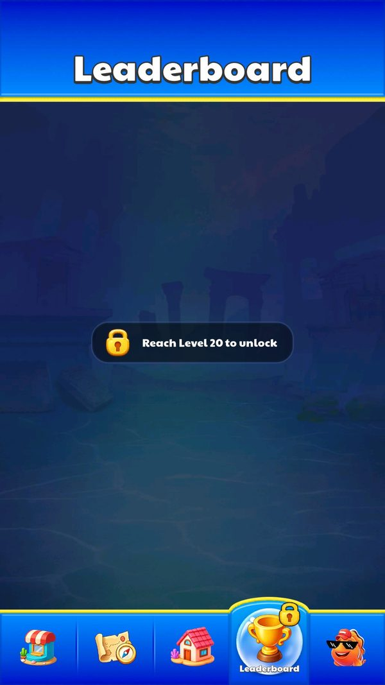

Bảng xếp hạng server
Đây là hệ thống trực tuyến duy nhất có ảnh hưởng tới gameplay của game.
Mô tả
- Đây là hệ thống trực tuyến duy nhất có ảnh hưởng tới gameplay của game.
- Toàn bộ phần còn lại chạy ngoại tuyến trên máy.
- Bảng xếp hạng xếp người chơi theo tổng số màn đã vượt (totalPassCount), có hai bảng song song là toàn cầu và theo quốc gia, mỗi bảng trả về đúng 100 dòng.
- Sau mỗi lần thắng màn, client gửi SubmitPassRequest kèm tên, avatar, khung và mã quốc gia, nên hồ sơ hiển thị trên bảng luôn là bản mới nhất do chính client khai báo.
- Gửi điểm sau khi thắng màn: Thứ hạng toàn cầu và quốc gia cập nhật
- Xem bảng xếp hạng toàn cầu: Hiển thị top 100 toàn cầu
- Xem bảng xếp hạng theo quốc gia: Hiển thị top 100 trong nước
- Xem thứ hạng của bản thân: Hiện dòng của chính mình
- Đặt lại điểm: Điểm của người chơi bị xoá khỏi bảng
- Lấy giờ server: Dùng cho điểm danh và sự kiện thay vì giờ máy
- Mất mạng khi mở bảng: Bảng trống hoặc giữ dữ liệu cũ
Lưu ý
Ảnh chụp màn hình (1)
Chụp trực tiếp từ game đang chạy: 2026-10-06 · LDPlayer 9 · Android 9 · 1080×1920 · máy ảo PHM110 · v1.4111 (cài từ Google Play ngày 12/09/2026) · tài khoản test JadeGill, đang ở level 4. Bấm ảnh để phóng to, dùng phím ← → để chuyển ảnh.


Mở khóa & điểm vào
Bảng xếp hạng có nút riêng ở Home. RankData chỉ lưu duy nhất cờ IsPlayUnlockAni để biết đã phát hoạt ảnh mở khoá lần đầu hay chưa.
Điểm vào:
- Nút bảng xếp hạng ở UIPanelHomeBottom
- Tự động gửi điểm sau khi thắng màn từ UIPanelWin
Cách hoạt động
- Base URL nằm cứng trong Assembly-CSharp: https://dl-xxxy.quetus.net/api/Rank, xuất hiện 137 lần trong chuỗi đã giải mã.
- Lớp dịch vụ có tên bị obfuscate nhưng log giữ nguyên tiền tố nên đọc được đầy đủ năm luồng: GetMyRank gọi /me?playerId=<id>&countryCode=<cc>, GetCountryRank gọi /country?countryCode=<cc>, GetGlobalRank gọi /global, SubmitPass gọi /submit, ResetScoreRequest gọi /reset, và /time để lấy giờ server.
- Mỗi luồng log theo mẫu [Rank] SubmitPass code:{0} msg:{1} data:{2} nên có thể đọc lại toàn bộ request và response bằng logcat mà không cần dựng proxy.
- playerId lấy từ PlayerPrefs unity.cloud_userid do Unity sinh ẩn danh.
- Mọi phản hồi bọc trong phong bì chung {code, msg, data} với code bằng 0 là thành công.
Luồng chi tiết theo code
Base URL nằm cứng trong Assembly-CSharp: https://dl-xxxy.quetus.net/api/Rank, xuất hiện 137 lần trong chuỗi đã giải mã. Lớp dịch vụ có tên bị obfuscate nhưng log giữ nguyên tiền tố nên đọc được đầy đủ năm luồng: GetMyRank gọi /me?playerId=<id>&countryCode=<cc>, GetCountryRank gọi /country?countryCode=<cc>, GetGlobalRank gọi /global, SubmitPass gọi /submit, ResetScoreRequest gọi /reset, và /time để lấy giờ server. Mỗi luồng log theo mẫu [Rank] SubmitPass code:{0} msg:{1} data:{2} nên có thể đọc lại toàn bộ request và response bằng logcat mà không cần dựng proxy. playerId lấy từ PlayerPrefs unity.cloud_userid do Unity sinh ẩn danh. Mọi phản hồi bọc trong phong bì chung {code, msg, data} với code bằng 0 là thành công.
Số liệu chính
| Chỉ số | Giá trị | Nguồn |
|---|---|---|
| Base URL | https://dl-xxxy.quetus.net/api/Rank | Assembly-CSharp, 137 lần trong strings-by-type.tsv |
| Danh sách đường dẫn | /global, /country?countryCode=, /me?playerId=, &countryCode=, /submit, /reset, /time | lớp dịch vụ Rank bị obfuscate trong PseudoC/Assembly-CSharp |
| Phong bì phản hồi | {"code":0,"msg":"success","data":...} | đo thực tế 2026-09-12, lưu ở facts/runtime/api/ |
| RankResponse | rank, playerId, userName, avatarId, frameId, countryCode, totalPassCount | class RankResponse trong dump.cs và phản hồi thật |
| MyRankResponse | globalRank, countryRank, totalPassCount | class MyRankResponse |
| SubmitPassRequest | PlayerId, UserName, AvatarId, FrameId, CountryCode, PassCount | class SubmitPassRequest |
| Kích thước bảng | 100 dòng mỗi bảng | đo thực tế |
| RANK_DATA_KEY_3 | {"IsPlayUnlockAni":false} | PlayerPrefs |
| country_names.txt | AssetRes/UITexture/ranking/flags/country_names.txt | bundle UITexture/ranking/flags |
| Level mở | 20 | Leaderboard (server) + ảnh chụp |
Use case (7)
Bấm vào từng use case để mở. Mở/đóng tất cả
UC-01 Gửi điểm sau khi thắng màn
Các bước- Dựng SubmitPassRequest gồm PlayerId, UserName, AvatarId, FrameId, CountryCode, PassCount
- POST tới /submit
- Ghi log [Rank] SubmitPass code msg data
| Actor | System |
|---|---|
| Trigger | Thắng một màn |
| Điều kiện | Có mạng |
| Kết quả | Thứ hạng toàn cầu và quốc gia cập nhật |
| Quy tắc / số liệu | PassCount do client gửi, bằng số màn đã vượt; server không kiểm chứng nên giá trị này giả mạo được |
| Evidence | SubmitPassRequest; chuỗi /submit; chuỗi [Rank] SubmitPass code:{0} msg:{1} data:{2} |
UC-02 Xem bảng xếp hạng toàn cầu
Các bước- GET /global
- Nhận mảng RankResponse
- Dựng danh sách 100 dòng kèm cờ quốc gia
| Actor | Player |
|---|---|
| Trigger | Mở UIPanelRank tab toàn cầu |
| Điều kiện | Có mạng |
| Kết quả | Hiển thị top 100 toàn cầu |
| Quy tắc / số liệu | Đo thực tế ngày 2026-09-12: đúng 100 dòng, totalPassCount từ 666 xuống 335 |
| Evidence | chuỗi /global; RankResponse; facts/runtime/api/rank_global.json |
UC-03 Xem bảng xếp hạng theo quốc gia
Các bước- GET /country?countryCode=<cc>
- Nhận mảng RankResponse chỉ gồm người chơi cùng quốc gia
| Actor | Player |
|---|---|
| Trigger | Mở UIPanelRank tab quốc gia |
| Điều kiện | Có mã quốc gia |
| Kết quả | Hiển thị top 100 trong nước |
| Quy tắc / số liệu | Mã quốc gia phân biệt chữ hoa thường. Gọi với vn trả về 100 dòng, gọi với VN trả về mảng rỗng. Client luôn gửi chữ thường |
| Evidence | chuỗi /country?countryCode=; facts/runtime/api/rank_country_vn.json so với rank_country_countryCode_VN.json |
UC-04 Xem thứ hạng của bản thân
Các bước- GET /me?playerId=<id>&countryCode=<cc>
- Nhận MyRankResponse gồm globalRank, countryRank, totalPassCount
| Actor | Player |
|---|---|
| Trigger | Mở bảng xếp hạng |
| Điều kiện | Đã từng gửi điểm |
| Kết quả | Hiện dòng của chính mình |
| Quy tắc / số liệu | Chưa từng gửi điểm thì trả về globalRank -1, countryRank -1, totalPassCount 0 |
| Evidence | MyRankResponse; chuỗi /me?playerId=; facts/runtime/api/rank_me....json |
UC-05 Đặt lại điểm
Các bước- Dựng ResetScoreRequest gồm PlayerId và CountryCode
- Gọi /reset
- Ghi log [Rank] ResetScoreRequest code msg data
| Actor | System |
|---|---|
| Trigger | Luồng reset điểm |
| Điều kiện | Có PlayerId và CountryCode |
| Kết quả | Điểm của người chơi bị xoá khỏi bảng |
| Quy tắc / số liệu | Chưa xác định điều kiện kích hoạt trong UI; nhiều khả năng dùng khi xoá dữ liệu hoặc đổi tài khoản |
| Evidence | ResetScoreRequest; chuỗi /reset |
UC-06 Lấy giờ server
Các bước- GET /time
- Nhận chuỗi ISO 8601 UTC
| Actor | System |
|---|---|
| Trigger | Cần mốc thời gian đáng tin |
| Điều kiện | Có mạng |
| Kết quả | Dùng cho điểm danh và sự kiện thay vì giờ máy |
| Quy tắc / số liệu | Đo thực tế trả về {"code":0,"msg":"success","data":"2026-09-12T15:49:16.7371532Z"}. Song song đó SDK có GetServerTimeByServerTimeZoneStatic trả về epoch mili giây |
| Evidence | chuỗi /time; logcat SDKManager:GetServerTimeByServerTimeZoneStatic trả về 1789253341967 |
UC-07 Mất mạng khi mở bảng
Các bước- Bắt ngoại lệ
- Ghi log [Rank] GetGlobalRank e:{0}
| Actor | System |
|---|---|
| Trigger | Request lỗi |
| Điều kiện | Không có mạng |
| Kết quả | Bảng trống hoặc giữ dữ liệu cũ |
| Evidence | chuỗi [Rank] GetGlobalRank e:{0}; [Rank] GetCountryRank e:{0}; [Rank] GetMyRank e:{0} |
Cấu hình (10)
Gộp mọi nguồn: const trong code, JSON mặc định trong Resources, bảng static, storage key, AB test, cờ server.
| Nguồn | Key | Kiểu | Giá trị | Ý nghĩa | Nơi định nghĩa |
|---|---|---|---|---|---|
| code const | Base URL | string | https://dl-xxxy.quetus.net/api/Rank | Máy chủ bảng xếp hạng, là endpoint gameplay duy nhất của game | Assembly-CSharp, 137 lần trong strings-by-type.tsv |
| code const | Danh sách đường dẫn | string | /global, /country?countryCode=, /me?playerId=, &countryCode=, /submit, /reset, /time | Sáu endpoint của API | lớp dịch vụ Rank bị obfuscate trong PseudoC/Assembly-CSharp |
| server info | Phong bì phản hồi | json | {"code":0,"msg":"success","data":...} | Định dạng chung mọi endpoint | đo thực tế 2026-09-12, lưu ở facts/runtime/api/ |
| server info | RankResponse | model | rank, playerId, userName, avatarId, frameId, countryCode, totalPassCount | Một dòng bảng xếp hạng | class RankResponse trong dump.cs và phản hồi thật |
| server info | MyRankResponse | model | globalRank, countryRank, totalPassCount | Thứ hạng của bản thân | class MyRankResponse |
| server info | SubmitPassRequest | model | PlayerId, UserName, AvatarId, FrameId, CountryCode, PassCount | Gói gửi điểm, mọi trường do client điền | class SubmitPassRequest |
| server info | Kích thước bảng | int | 100 dòng mỗi bảng | Server cắt top 100 cho cả /global lẫn /country | đo thực tế |
| storage key | RANK_DATA_KEY_3 | json | {"IsPlayUnlockAni":false} | Toàn bộ state cục bộ của bảng xếp hạng chỉ là một cờ hoạt ảnh | PlayerPrefs |
| asset | country_names.txt | text | AssetRes/UITexture/ranking/flags/country_names.txt | Bảng tên quốc gia kèm bộ cờ dùng để vẽ dòng xếp hạng | bundle UITexture/ranking/flags |
| runtime LDPlayer 06/10/2026 | Level mở bảng xếp hạng | server info | 20 ("Reach Level 20 to unlock") | Xác nhận nghĩa của tham số Leaderboard = 20 | ảnh chụp screenshots/rank_locked_level20.jpg |
Tham số server (live)
Tham số online của SDK ZMYSDK (SDKManager.getOnlineConfigParams). Giá trị live đọc từ logcat ngày 12/09/2026; ô tô vàng là chỗ server ghi đè mặc định của client. Bảng đủ 17 khoá ở phụ lục sự kiện và facts/runtime/server-config.md.
| Khoá | Mặc định client | Live (server) | Property C# | Ý nghĩa |
|---|---|---|---|---|
Leaderboard | 20 | 20 | Leaderboard | Level mở bảng xếp hạng; màn hình ghi đúng "Reach Level 20 to unlock" |
Backend / server
| Command | Chiều | Mục đích |
|---|---|---|
GET /time | client sang server | Lấy giờ UTC của server |
GET /global | client sang server | Top 100 toàn cầu |
GET /country?countryCode=<cc> | client sang server | Top 100 theo quốc gia, mã phải viết thường |
GET /me?playerId=<id>&countryCode=<cc> | client sang server | Thứ hạng của chính người chơi |
POST /submit | client sang server | Gửi PassCount và hồ sơ hiển thị |
POST /reset | client sang server | Xoá điểm của người chơi |
Giao diện (UI)
| Element | Class | Mục đích |
|---|---|---|
| Trang bảng xếp hạng | UIPanelRank | Hai tab toàn cầu và quốc gia, ghim dòng của mình |
| Cờ quốc gia | AssetRes/UITexture/ranking/flags | Icon cạnh mỗi dòng |
Storage keys
RANK_DATA_KEY_3 unity.cloud_userid
Chưa đọc được / ghi chú
- Server không xác thực PassCount nên không thể phân biệt điểm thật với điểm giả mạo từ phía client
- Không xác định được tỉ lệ tài khoản seed trên bảng: cả 100 tên ở top toàn cầu đều ghép đúng từ NickNameConfig, nhưng người chơi thật chưa đổi tên cũng mang tên tự sinh y hệt nên hai nhóm không phân biệt được bằng tên. playerId có 89 UUID phiên bản 3 và 11 phiên bản 4, chưa suy ra được quy tắc sinh
- Điều kiện kích hoạt /reset trong UI chưa tìm thấy
- Không rõ server giữ bao nhiêu dòng thật phía sau top 100
Tính năng liên quan
Hồ sơ, tên và trang phục Tiến trình và dữ liệu màn Sự kiện đua có người chơi ảo
Nguồn đã đọc
- features/UIPanelRank.md
- PseudoC/Assembly-CSharp (lớp dịch vụ Rank bị obfuscate)
- RecoveredNative/strings-by-type.tsv
- facts/runtime/api/rank_global.json
- facts/runtime/api/rank_country_vn.json
- facts/runtime/api/rank_time.json
- feature_extras.json
- screenshots/
- facts/runtime/decoded/playerprefs_2026-10-06.json